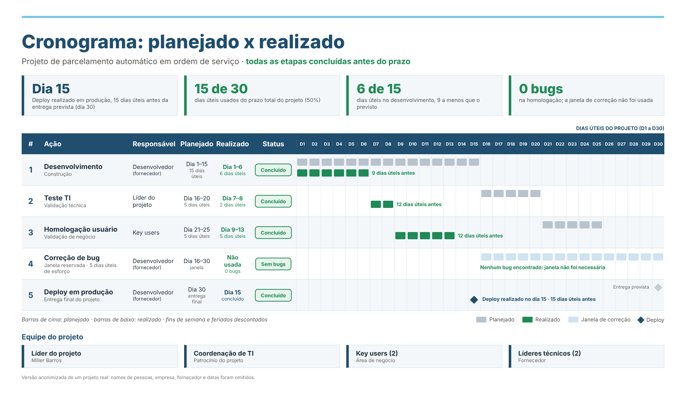
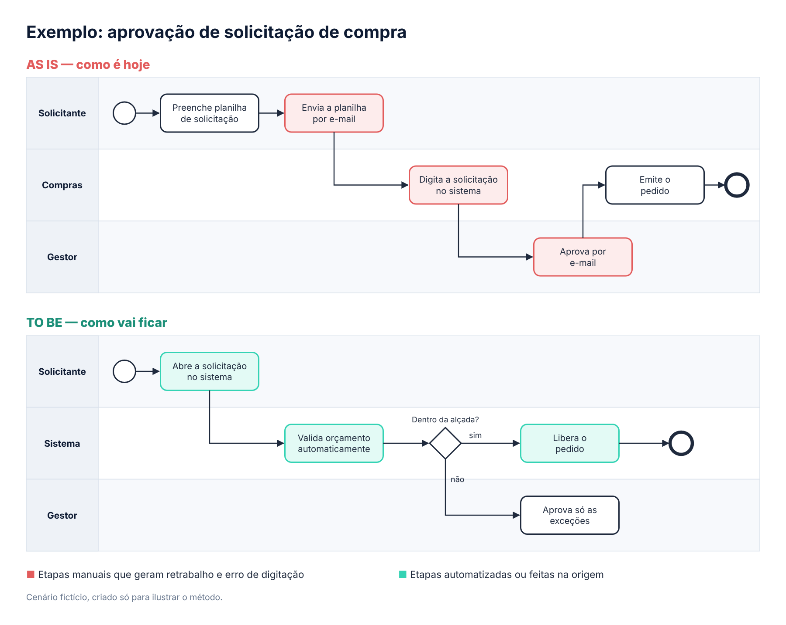
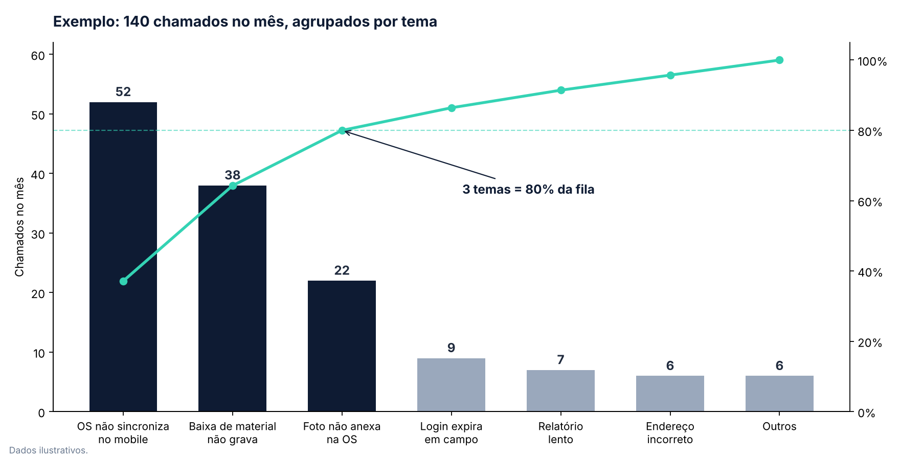
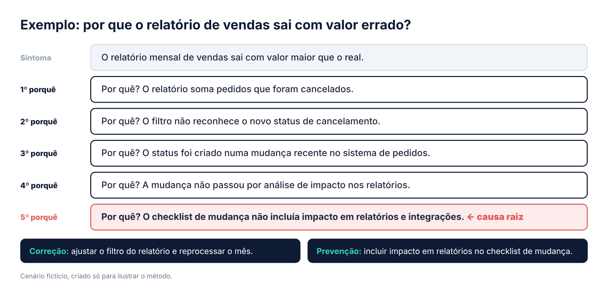
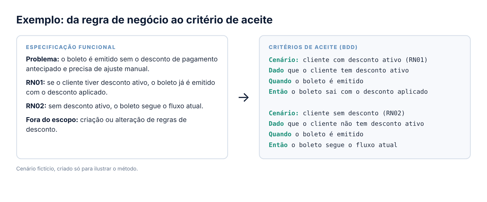

Squads ágeis (Scrum)
Scrum Master de squads multidisciplinares de até 11 pessoas, conduzindo todos os ritos: Planning, Daily, Review, Retrospectiva e Refinamento, além de remover impedimentos e apoiar o PO no backlog.
PORTFÓLIO PROFISSIONAL
Scrum Master Sênior · Líder de Projetos de TI · Analista de Negócios e Produto · Gestão de Problemas (ITIL)
Mais de 18 anos em tecnologia, sendo os últimos 4 conduzindo squads ágeis, projetos e a Gestão de Problemas de TI em sistemas críticos de operação de campo. Faço a ponte entre negócio, tecnologia e fornecedores, da especificação até a entrada em produção.
COMO POSSO CONTRIBUIR
Começo entendendo como o processo funciona de verdade, transformo a necessidade em requisito claro e acompanho a entrega até ela funcionar na ponta, para quem usa.
Scrum Master de squads multidisciplinares de até 11 pessoas, conduzindo todos os ritos: Planning, Daily, Review, Retrospectiva e Refinamento, além de remover impedimentos e apoiar o PO no backlog.
Líder de projetos em cascata e híbridos: escopo fechado, cronograma no MS Project, riscos, dependências, fornecedores, homologação e status report para a alta gestão.
Especificações funcionais, histórias de usuário com BDD (Gherkin), BPMN AS IS / TO BE, análise de impacto e homologação.
Incidentes recorrentes tratados como problema, análise de causa raiz com 5 Porquês, correção priorizada e deploy planejado.
QUANDO HÁ SQUAD
Ex.: Squads de Serviços 2024 e 2025
QUANDO O ESCOPO É FECHADO
Ex.: 7 APIs para BI, Fluxo de Ordens de Serviço, Parcelamento
EXPERIÊNCIA APLICADA
Iniciativas conduzidas no Grupo Águas do Brasil, no setor de saneamento, e um projeto autoral. Geocall é o sistema que gerencia as ordens de serviço das equipes de campo. Metas e estimativas aparecem identificadas como tal.

Cronograma planejado x realizado, versão anonimizada. Clique para ampliar.
As descrições foram resumidas para apresentação profissional, sem expor informações internas ou dados de clientes.
MÉTODOS E FERRAMENTAS
BPMN é a notação padrão para desenhar processos: quem faz cada etapa (raias), em que ordem (setas) e onde há decisão (losango). Primeiro desenho o AS IS, o processo como ele é hoje, validado com quem executa. Depois desenho o TO BE, o processo como vai ficar com a solução. A comparação mostra onde estão o retrabalho e o ganho, e vira base para a especificação funcional.

Cenário fictício, criado só para ilustrar o método: 3 etapas manuais saem do processo e o gestor passa a aprovar só as exceções.
Agrupo os chamados por tema, e não um a um, e ordeno pela frequência e pelo impacto. Quase sempre poucos problemas explicam a maior parte da fila. É por eles que começa a correção, com a gestão enxergando o porquê da prioridade.

Cenário fictício, criado só para ilustrar o método: 3 de 7 temas somam 80% dos chamados do mês.
Baixar planilha 80/20 para chamados (Excel) ↓Parto do sintoma e pergunto "por quê?" a cada resposta, até chegar a uma causa que, se corrigida, impede o problema de voltar. Cada resposta precisa de evidência: log, chamado ou teste. Nem sempre são exatamente cinco; o ponto é não parar no primeiro culpado aparente. No fim, separo a correção do problema da prevenção no processo.

Cenário fictício, criado só para ilustrar o método: o sintoma estava no relatório, a causa raiz estava no processo de mudança.
Combino estimativa por analogia, análise de escopo e requisitos, a opinião de quem vai executar e o mapeamento de riscos. Por cima disso, uso PERT e Monte Carlo para levar ao negócio o P80, e não uma promessa.
Estrutura própria para investigar problemas recorrentes em sete passos: Perceber, Anotar, Localizar, Aprofundar, Verificar, Resolver e Acompanhar. O primeiro relato vira hipótese, não causa.
Uma especificação boa não é a mais longa, é a que todos entendem igual. Começo pelo problema do usuário, escrevo as regras numeradas (RN01, RN02…) para todos falarem da mesma regra, deixo claro o que fica fora do escopo e transformo cada regra em critério de aceite no formato BDD: Dado, Quando, Então. Se não dá para testar, não está claro.

Cenário fictício, criado só para ilustrar o método: cada regra de negócio vira um cenário que o time desenvolve e o usuário homologa.
MATERIAIS PARA USAR
Modelos práticos para fila de chamados, comunicação e análise de demandas. Uso livre.
Cadastre os temas e os chamados: ranking, faixas de prioridade e gráfico de Pareto se montam sozinhos.
Baixar planilha ↓Frases para falar com fornecedor, usuário, gestão e time ágil com clareza e sem criar atrito.
Abrir guia ↗As perguntas que faço antes de uma demanda entrar no backlog ou seguir para o fornecedor.
Abrir checklist ↗PRINCÍPIO DE TRABALHO
Antes de propor uma solução, preciso entender qual problema estamos resolvendo e como vamos saber que ele foi resolvido.
Clareza do problema · Evidências · Prioridade · Acompanhamento · Validação
PUBLICAÇÕES
Escrevo sobre o lado prático de projetos, agilidade e Gestão de Problemas.
FORMAÇÃO E CERTIFICAÇÕES
Certified ScrumMaster (CSM) — Scrum Alliance
SFPC — Scrum Foundation Professional Certificate
Gestão de Projetos e Processos em TI
Liderança e Gestão de Equipes de Alta Performance
Gestão da Qualidade de Software
Português nativo
Inglês intermediário
Espanhol intermediário
CONTATO PROFISSIONAL
Bom Jardim/RJ · trabalho remoto.
E-mail: millerkbarros@gmail.com · Celular: (22) 98123-7525